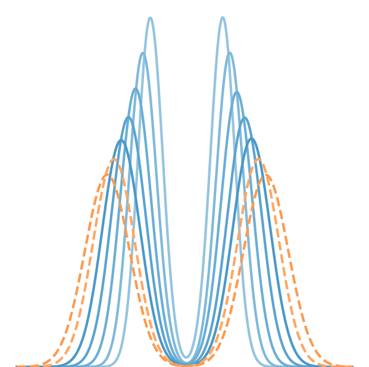

About Me
I am a Data Science Consultant at Business Network Builders, focused in translating data into actionable insights, with a background in Economics and experience in an aerospace startup. Also passionate with planes and all things that fly.Publications
Feature Selection with Optuna
Towards Data Science, 2024
[article]
[notebook]
 Improving Generalization in Survival Models
Improving Generalization in Survival Models
Towards Data Science, 2024
[article]
 Charting the Skies: Predicting Time-Varying Density Functions of Satellite Masses using GANs
Charting the Skies: Predicting Time-Varying Density Functions of Satellite Masses using GANs
Medium, 2023
[article]
[github]

Density Functions Time Series Analysis
Master's Thesis, 2023
[spanish]
[english]
[github]